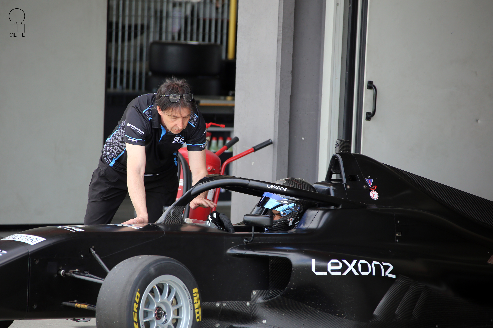
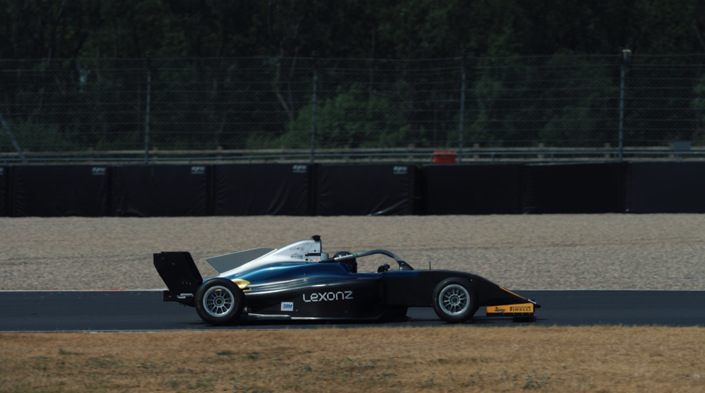
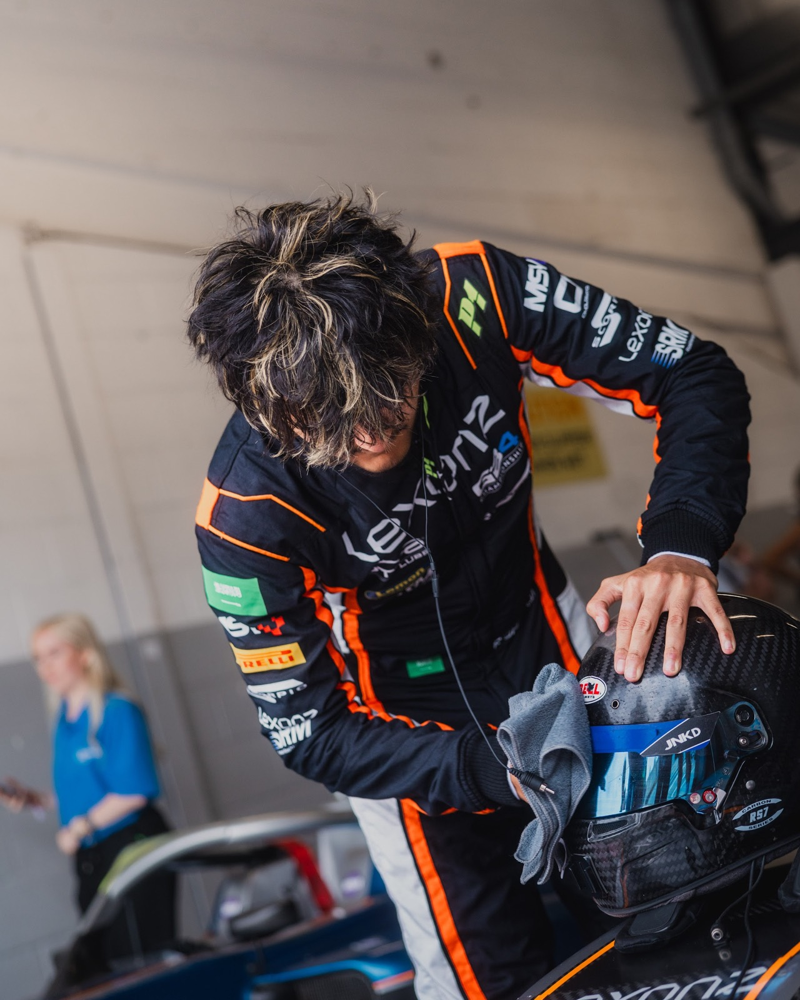
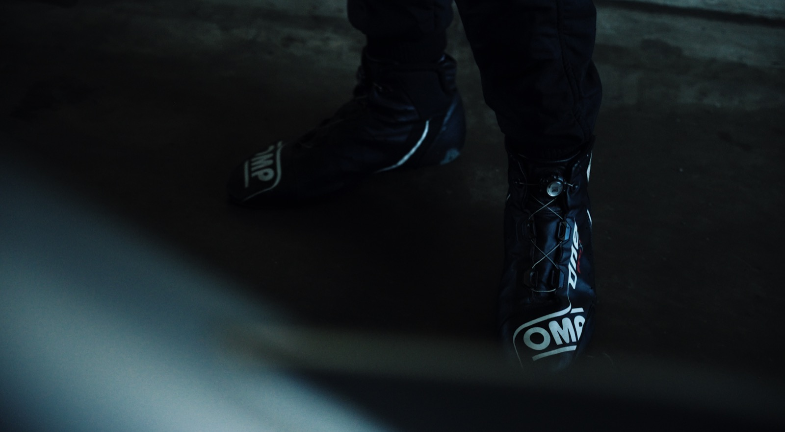
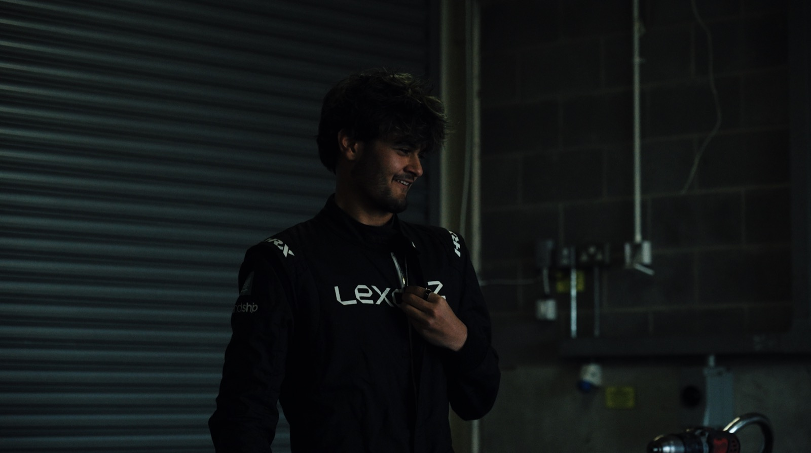
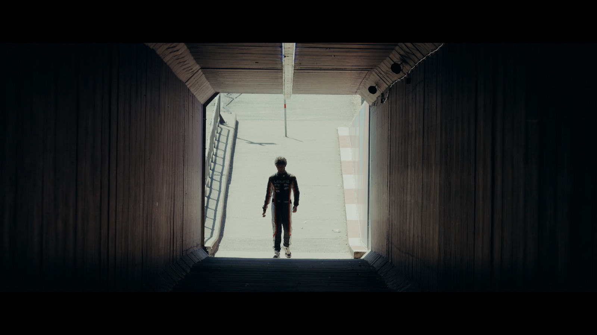
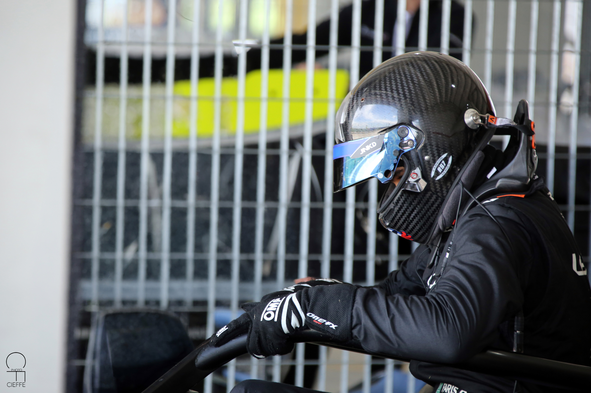

BUILD THE FOUNDATION
KARTING
Develop racecraft, discipline and technical awareness through seat time, coaching and structured assessment.
Saudi motorsport · Built to compete
LEXONZ helps drivers, teams and partners navigate motorsport with structured development, competition planning, management and commercial support—from grassroots entry to the appropriate next level.
Explore the pathway↓How we think
We connect sporting development, technical capability, career management, investment, partnerships and media—so every part of the motorsport journey works toward the same direction.
We align driver development, technical preparation and career management around the demands of the next level.
We connect investment, partnerships and media to create stronger foundations around talent, teams and motorsport opportunities.
Explore the system↗
The driver pathway
No two motorsport careers are identical. We assess ability, preparation, experience, resources and opportunity to identify the most appropriate route—currently including a clear karting-to-Formula pathway.
Develop racecraft, discipline and technical awareness through seat time, coaching and structured assessment.
Prepare for single-seater competition through testing, data review, physical conditioning and race-weekend experience.
Pursue Formula 3 and Formula 2, or the right route across GT, endurance, rally and other disciplines, when results, readiness, resources and suitable opportunities align.
Inside the program
Race weekends reveal what development work must improve. Every session creates feedback for the driver, engineers and the next stage of the program.





One sport · Multiple disciplines
Motorsport extends beyond any single championship. Our system is designed to support the people and opportunities around Formula racing, karting, GT, endurance, rally and the wider competitive landscape.
Explore our capabilities↗
FOCUS / DISCIPLINE / AMBITIONBuild the next step
Whether you are a young driver, parent, team, technical specialist or commercial partner, begin with an honest conversation about objectives, readiness and the work required next.
EVERY LEVEL MUST BE EARNED.
BUILD THE NEXT.↗